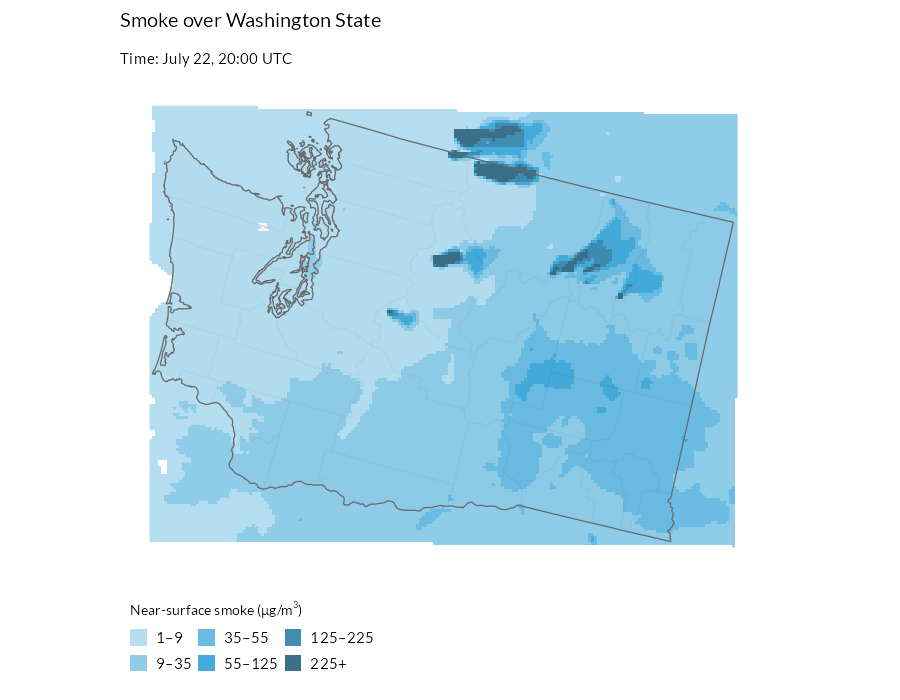

Animating Wildfire Smoke
get_hrrr_smoke.Rmdget_hrrr_smoke() retrieves hourly near-surface wildfire
smoke concentrations from NOAA’s High-Resolution Rapid Refresh (HRRR)
model for any area in the conterminous United States, on a 3-kilometer
grid. Here we build a two-week look-behind animation of smoke over
Washington State: where smoke traveled, when it arrived, and how severe
it was at ground level.
library(climateapi)
library(dplyr)
library(stringr)
library(sf)
library(ggplot2)
library(urbnthemes)
library(gganimate)Pulling two weeks of hourly smoke
We ask for the “surface” variable – smoke mass density 8 meters above
ground, in micrograms per cubic meter, the quantity most comparable to
PM2.5 air quality readings. The result is a
terra::SpatRaster with one layer per retrieved hour,
timestamped in UTC. Three-hourly steps (eight frames per day) keep the
animation responsive over a two-week window; pass
hours = 0:23 for the full hourly record.
projection = 5070
area_of_interest = tigris::states(cb = TRUE, year = 2023, progress_bar = FALSE) %>%
filter(str_detect(NAME, "Washington")) %>%
st_transform(projection)
smoke_data = get_hrrr_smoke(
geometries = area_of_interest,
start_date = Sys.Date() - 14,
end_date = Sys.Date(),
variable = "surface",
hours = seq(0, 21, by = 3))
#>
|---------|---------|---------|---------|
=========================================
smoke_data
#> class : SpatRaster
#> size : 150, 200, 117 (nrow, ncol, nlyr)
#> resolution : 3000, 3000 (x, y)
#> extent : -2036020, -1436020, 991193.8, 1441194 (xmin, xmax, ymin, ymax)
#> coord. ref. : +proj=lcc +lat_0=38.5 +lon_0=-97.5 +lat_1=38.5 +lat_2=38.5 +x_0=0 +y_0=0 +R=6371229 +units=m +no_defs
#> source(s) : memory
#> names : 2026-~00:00, 2026-~03:00, 2026-~06:00, 2026-~09:00, 2026-~12:00, 2026-~15:00, ...
#> min values : 2.988507e-15, 1.077663e-16, 1.053054e-16, 9.260972e-17, 3.603632e-14, 2.684881e-08, ...
#> max values : 4.555040e+03, 4.114960e+03, 1.005960e+03, 6.965000e+02, 1.654240e+03, 1.312560e+03, ...
#> time : 2026-07-23 to 2026-08-06 12:00:00 UTC (117 steps)Preparing the data for mapping
The raster arrives in the HRRR model’s native projection; we
reproject it to match the vector layers, then melt it into a
one-row-per-cell-per-hour tibble, which is the shape
gganimate needs.
Rather than mapping concentrations to a continuous color ramp, we bin them at the EPA’s 24-hour PM2.5 Air Quality Index breakpoints (rounded for display): 9, 35, 55, 125, and 225 micrograms per cubic meter mark the transitions from “good” air through “moderate”, “unhealthy for sensitive groups”, “unhealthy”, “very unhealthy”, and “hazardous”. Cells below 1 microgram per cubic meter are dropped entirely so that clean air stays transparent and the basemap shows through.
smoke_data_projected = terra::project(smoke_data, paste0("EPSG:", projection))
counties_context = tigris::counties(
cb = TRUE, year = 2023, state = "WA", progress_bar = FALSE) %>%
st_transform(projection) %>%
select(NAME)
smoke_breaks = c(1, 9, 35, 55, 125, 225, Inf)
smoke_labels = c("1–9", "9–35", "35–55", "55–125", "125–225", "225+")
smoke_colors = palette_urbn_cyan[2:7]
names(smoke_colors) = smoke_labels
smoke_df = smoke_data_projected %>%
as.data.frame(xy = TRUE, wide = FALSE) %>%
as_tibble() %>%
left_join(
tibble(
layer = names(smoke_data_projected),
timestamp = terra::time(smoke_data_projected)),
by = "layer",
relationship = "many-to-one") %>%
rename(smoke_ug_m3 = values) %>%
mutate(
smoke_level = cut(
smoke_ug_m3,
breaks = smoke_breaks,
labels = smoke_labels,
right = FALSE)) %>%
filter(!is.na(smoke_level))Animating
The plot is an ordinary ggplot – light-filled counties first, the
smoke raster on top, an outline-only state border last – plus
transition_time(timestamp), which turns the hourly layers
into frames. animate() renders one frame per model hour,
and anim_save() writes the result next to the vignette’s
other figures so it can be embedded below.
smoke_animation = ggplot() +
geom_sf(data = counties_context, fill = "#f5f5f5", color = "#d2d2d2", linewidth = 0.35) +
geom_raster(data = smoke_df, aes(x = x, y = y, fill = smoke_level), alpha = 0.8) +
geom_sf(data = area_of_interest, fill = NA, color = "#696969", linewidth = 0.35) +
scale_fill_manual(
values = smoke_colors,
## keep every severity bin in the legend even in frames where no cell
## reaches it, so the legend does not change size between frames
drop = FALSE,
name = expression("Near-surface smoke (" * mu * "g/m"^3 * ")")) +
labs(
title = "Smoke over Washington State",
subtitle = "Time: {format(frame_time, '%B %d, %H:%M UTC')}") +
urbnthemes::theme_urbn_map() +
theme(
legend.position = "bottom",
legend.justification = "left",
legend.direction = "horizontal",
legend.title.position = "top",
legend.key.spacing.x = unit(0.25, "line")) +
transition_time(timestamp) +
ease_aes("linear")
smoke_gif = animate(
smoke_animation,
renderer = gifski_renderer(),
device = "ragg_png",
nframes = n_distinct(smoke_df$timestamp),
fps = 8,
width = 900,
height = 700,
units = "px",
res = 120,
end_pause = 8)
anim_save("figure/get_hrrr_smoke-animation.gif", smoke_gif)
The model’s spatial patterns – where plumes travel and pool – are generally reliable, but the concentrations are estimates driven by satellite fire detections, so they can be biased where fire emission estimates are wrong. For observed ground truth at specific locations, compare against PM2.5 monitor readings (for example, via the AirNow API), which share the same unit.